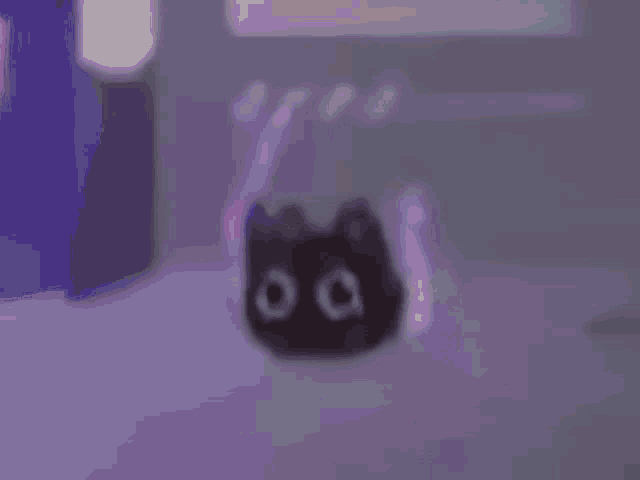

Коты и интернет
Изображения и видео с домашними кошками (жарг. ко́тэ́) — один из самых просматриваемых видов контента в Интернете,
в частности крайне популярны макросы[en] в жанре lolcat. ThoughtCatalog называет кошек «неофициальным талисманом Интернета».
Тема привлекает внимание учёных и критиков, пытающихся разобраться в причинах культовой популярности подобной «низкой» формы
искусства. Это может показаться легкомысленным, но через интернет-контент с «котиками» люди реально взаимодействуют с медиа
и совершают культурный обмен[2]. По мнению некоторых исследователей, в лучших образцах такого, казалось бы, совсем
незамысловатого контента есть глубина и содержательность, кроме того, он оказывает позитивное психологическое воздействие,
сопоставимое по эффективности с реальной пет-терапией.
Отдельные кошки, например, Сердитый Котик и Лил Баб, получили популярность в интернете благодаря своей необычной внешности.
Знаменитости
Сердитый котик
Соус Тардар (Tardar Sauce, 4 апреля 2012 года — 14 мая 2019 года), более известная под интернет-именем «Сердитый Котик»
(Grumpy Cat), стала интернет-знаменитостью, благодаря «сварливому» выражению морды. Её владелец, Табата Бандесен,
говорит, что это следствие неправильного прикуса и кошачьей карликовости. Популярность Сердитого Котика началась с
фотографии, размещенной на социальном новостном сайте Reddit Брайаном Бандесеном, братом Табаты 22 сентября 2012 года.
Это было сделано в формате макроса с соответствующей «сварливой» надписью. Официальная страница Сердитого Котика на Facebook
набрала более 7 миллионов «лайков». 30 мая 2013 года Сердитый Котик появился на первой странице The Wall Street Journal,
а 7 октября 2013 года — на обложке New York Magazine. В августе 2015 года стало известно, что Сердитый Котик получит
собственную восковую копию в музее Мадам Тюссо в Сан-Франциско.

Большой Шлепа
владельцы каракала опубликовали в своём инстаграме фото, где он лежит на подоконнике вместе с котом Жорой. Впоследствии
именно этот снимок стал первым шаблоном для мемов с каракалом. Первыми на фотографию обратили внимание авторы ироничных
инстаграм-аккаунтов, которые сначала дали Гоше прозвище «big sahnr» (или просто «sahnr»). В январе 2020 года за свои
большие уши Гоша получил прозвище Big Floppa (от англ. flop — «шлепок»), под которым впоследствии и стал известен.
В феврале 2020 года был опубликован первый мем, набравший большую популярность — демотиватор с отредактированной
фотографией Гоши, где он изображён без ушей.
Картинка распространилась по другим аккаунтам, специализирующимся по интернет-мемам. К маю мемы со Шлёпой распространились
за пределы Инстаграма — шутки про каракала стали публиковать в Твиттере и на Реддите. Летом популярность мема дошла до
рунета, где по аналогии с Big Floppa Гоша получил прозвище Большой Шлёпа.

| ТОП БОЕВЫХ КОТИКОВ | |||||
|---|---|---|---|---|---|
| ИМЕНА | ЦЕНА | ХАРАКТЕРИСТИКИ | |||
| ОЧКИ ЗДОРОВЬЯ | ЕДИНОРАЗОВЫЙ УРОН | УРОН/СЕК. | ТИП АТАКИ | ||
| Orbital Annihilator Ragnarok | 4500 | 40800 | 88400 | 12390 | По области |
| Awakened Bahamut Cat | 4500 | 25500 | 93500 | 30158 | По области |
| Cat Machine Mk 3 | 3600 | 153000 | 94438 | 10608 | По области |
| Lasvoss | 5400 | 34000 | 102000 | 6120 | По области |
| Bunny & Canard | 5910 | 115600 | 108970 | 13682 | По области |
